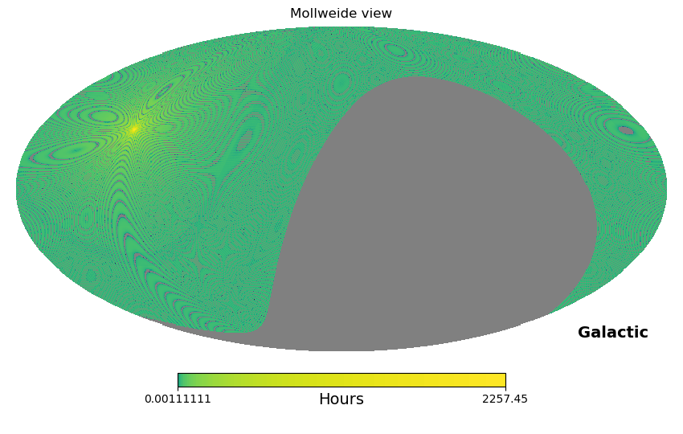

Make an Exposure Map
Author: Pragya Chawla
Below we provide a sample script for creating an exposure map from CHIME/FRB Catalog 1 Data. This example uses the healpy package to project the exposure map onto the 2D plane and serves as an example tp create both a high and low resolution exposure maps.
This utility is also provided through the CHIME/FRB Open Data python project.
cfod
from cfod.analysis import exposure
fname = "exposure_int_20180828_20191001_transit_U_beam_FWHM-600_res_4s_0.86_arcmin.npz"
exposure.render(filepath=fname)

Creating an exposure map for both upper and lower transits
import numpy as np
import matplotlib.pyplot as plt
import healpy as hp
from astropy.coordinates import SkyCoord
import astropy.units as u
fname_u = "exposure_int_20180828_20190702_transit_L_beam_FWHM-600_res_4s_0.86_arcmin.npz" #Upper Transit
fname_l = "exposure_int_20180828_20190702_transit_U_beam_FWHM-600_res_4s_0.86_arcmin.npz" #Lower Transit
with np.load(fname_u) as data:
exposure = data["exposure"]
#setting parameters for map resolution
# spatial
nside = 4096
npix = hp.nside2npix(nside)
# temporal
t_res = 4
# Initializing a healpy map
hpxmap = np.zeros(npix, dtype=np.float)
hpxmap[0:len(exposure)] += t_res * exposure/(3600.) #seconds to hours
hpxmap[hpxmap==0] = hp.UNSEEN #masking pixels with zero exposure
# Plotting
hp.mollview(hpxmap, coord=['C','G'], norm='log', unit="Hours")
# Check exposure time in hours for FRB 20121102A
coord = SkyCoord("05:31:58.70", "+33:08:52.5", frame='icrs', unit = u.deg)
print("Exposure (in hours): %.2f"%hpxmap[hp.ang2pix(nside, coord.ra.deg, coord.dec.deg, lonlat=True)])
### Obtaining a lower resolution map ###
nside_out = 1024
print("Resolution of new map : %.2f arcmin"%(hp.nside2resol(nside_out, arcmin=True)))
# Degrade healpix resolution to nside_out
hpxmap_dg = hp.ud_grade(hpxmap, nside_out)
hp.mollview(hpxmap_dg, coord=['C','G'], norm='log', unit="Hours")
Hint
nside_outVarying nside_out parameter below will change the resolution. The nside parameter for the current map is 4096. You can switch to a lower value. However, do not use an nside lower than 512 as you would not be nyquist sampling the CHIME/FRB beam pattern in that case.hpxmapYour HEALpix map will live here.hpxmap_dgYour downgraded HEALpix map will live here.hp.mollviewPlots a Mollweide projection of your HEALpix map.